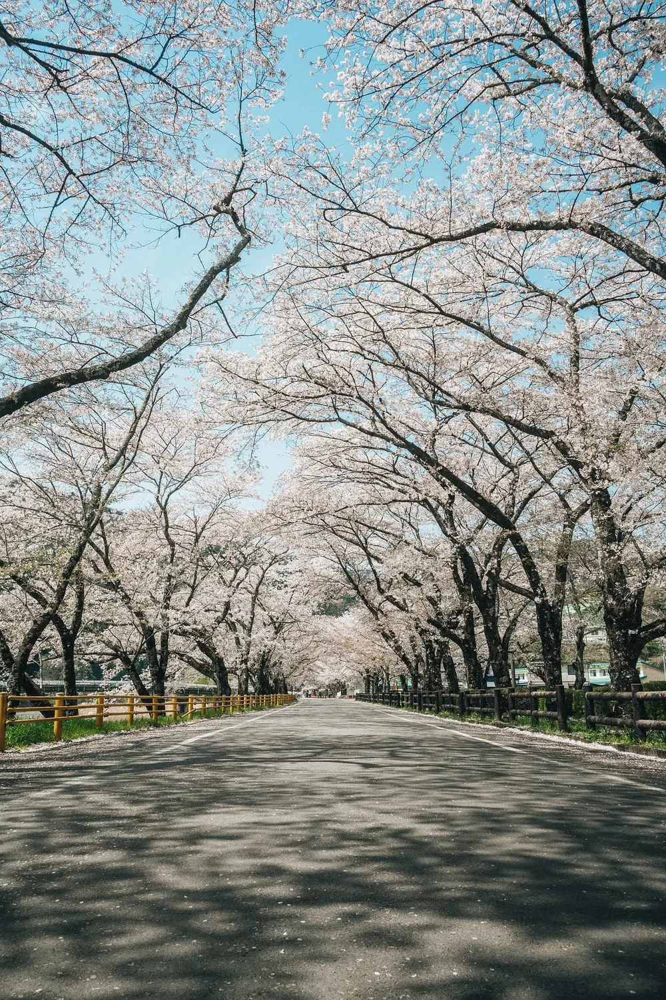

Edinburgh in spring:
gardens, blossom and slow walks.
A slow guide to spring in Edinburgh: where the flowers are, what the weather really does, and how to plan around it.

What is spring like in Edinburgh?
Spring brings a fresh atmosphere to Edinburgh. As winter gradually gives way to longer days and milder weather, the city's parks, gardens and historic streets begin to show signs of a new season. Flowers appear across green spaces, trees start to blossom, and outdoor walks become an inviting part of everyday city life.
Spring here generally covers March, April and May, and it does not arrive all at once. Early spring can still feel cold, while April and May bring more daylight, fresh greenery and more reasons to be outdoors. Snowdrops and daffodils can add colour to gardens early in the season, and by late spring some parts of the city are especially good for photography, garden walks and outdoor cafés.
The weather can stay unpredictable. A sunny afternoon may be followed by rain or a cool breeze, so prepare for changing conditions rather than expecting warm weather every day.
Where to see spring flowers in Edinburgh
Edinburgh has several parks and gardens where you can enjoy seasonal flowers and fresh spring landscapes. Each offers a slightly different experience, from formal displays to open green spaces and quiet walking routes.
The Meadows
The Meadows is one of Edinburgh's best-known public green spaces. In spring the park becomes especially attractive, and the cherry blossom around parts of it is a major draw for a relaxed walk or for photography. The open paths also suit cycling, meeting friends or taking a break from sightseeing. Visit at a comfortable pace, and allow time to explore the surrounding neighbourhood.
Royal Botanic Garden Edinburgh
If you are interested in plants and gardens, the Royal Botanic Garden is an excellent spring destination. Its collection of plants, trees and landscaped areas brings a changing display of colour, including rhododendrons, magnolias and other seasonal blooms, with woodland settings alongside cultivated collections and open lawns. It suits a slower afternoon away from the busiest historic streets. Check the Garden's official website before you go for opening information, access updates and any areas that may be temporarily closed. [3]
Princes Street Gardens
In the heart of the city, Princes Street Gardens is a green escape between the Old Town and the New Town. In spring, flower displays and fresh greenery create a colourful setting beneath the historic skyline, with views towards Edinburgh Castle. It is easy to fit between nearby attractions, so you do not need to plan a separate day around it.
Lauriston Castle Gardens
Lauriston Castle offers a quieter setting away from some of the busiest visitor areas. The castle and its grounds combine historic character with green space, and in spring the gardens and trees make a peaceful place to walk. Check the official visitor information before you plan a visit, especially if you want to go inside the castle or attend an event, because access to the building and the grounds can differ.
St Andrew Square
St Andrew Square is a central green space in the New Town, surrounded by elegant architecture. It is a convenient place to pause while exploring the shopping and cultural areas nearby, and in spring seasonal planting and flowering trees can add extra colour.
Water of Leith Walkway
The Water of Leith Walkway follows the river through parts of the city, passing green spaces, historic surroundings and quieter neighbourhoods. Spring makes it especially enjoyable as plants and trees show new growth. You do not need to walk all of it: choose a section that suits your time and ability, wear comfortable footwear, and check route conditions first, particularly after wet weather.
What flowers can you see?
Depending on the weather and the location, these are some of the seasonal highlights:
- Snowdrops. Small white flowers that can appear towards the end of winter and into early spring.
- Crocuses. Colourful flowers that often appear in lawns and garden beds early in the season.
- Daffodils. Bright yellow flowers, and one of the familiar signs of spring in parks and gardens.
- Cherry blossom. Pink or white blossom on flowering cherry trees, which often draws photographers and visitors.
- Magnolias. Trees with large, striking flowers that can be a highlight in some gardens.
- Rhododendrons. Flowering shrubs that give colourful displays in suitable garden settings.
Temperature, rainfall and local conditions all affect when plants bloom. If cherry blossom is the main reason for your trip, keep your dates flexible and check recent local updates before you book.
Things to do in Edinburgh in spring
Spring is not only about flowers. It also makes it easier to explore the city, enjoy outdoor activities and experience local culture.
Take a relaxed walking tour
Edinburgh rewards exploring on foot, and spring makes it easier to combine historic sightseeing with outdoor breaks. You could begin in the Old Town, walk the Royal Mile, continue to Princes Street Gardens and finish in the New Town. Take your time with the smaller streets and viewpoints, because some of the most memorable parts of the city sit between the major attractions.
Explore the historic neighbourhoods
Stockbridge, Dean Village and parts of Leith offer a different atmosphere from the main tourist streets, with independent shops, cafés, historic buildings and riverside or waterfront settings. A neighbourhood walk gives a more relaxed view of everyday life in the city.
Plan for indoor time
Spring weather can change quickly, so keep indoor options in your plans. The National Museum of Scotland suits visitors interested in history, science, design and culture, and other museums and galleries across the city are good choices when rain interrupts outdoor plans.
Stop for coffee
After a morning of walking, take a break in a local café. The city has many independent coffee shops and places for a light lunch, and sitting in a neighbourhood café is one of the simplest ways to slow down.
Take a spring photography walk
Flowers and fresh greenery against Edinburgh's historic architecture make good photographs. The Meadows, Princes Street Gardens and the Royal Botanic Garden are useful starting points. Visit early in the day, when popular areas may be quieter, and respect other visitors and residential spaces.
Spring festivals and events
Edinburgh has a cultural calendar that runs all year. Spring suits visitors who enjoy science, theatre and family activities.
Edinburgh Science Festival
The Edinburgh Science Festival brings science and technology to a wide audience through exhibitions, workshops, talks and interactive experiences. It suits families as well as adults who enjoy learning. The published dates for 2027 are 3 to 18 April. [1]
Edinburgh International Children's Festival
This festival celebrates theatre and performing arts for young audiences, and its programme can include theatre, dance and circus. It is worth considering if you are visiting with children. The listed dates for 2027 are 29 May to 6 June, so it runs into early summer. [2]
Dates and programmes change each year. Confirm the latest details on each festival's official website before you book accommodation or travel.
Weather and what to pack
March can still feel quite wintry, while April and May often bring longer days and more comfortable time outdoors. Rain is possible all season, and the wind can make temperatures feel cooler. For conditions close to your trip dates, check the Met Office forecast. [4]
Keep your outdoor plans flexible and let the weather choose the order of the day.
When it is pleasant, explore the gardens and walking routes. When rain arrives, swap in a museum, a gallery or a café instead.
What to pack
Think in layers rather than a large winter wardrobe:
- A lightweight waterproof jacket.
- Comfortable walking shoes with good grip, especially for wet park paths.
- Sweaters or light warm layers for cool mornings and evenings.
- T-shirts or breathable tops for milder afternoons.
- A compact umbrella, if you prefer to carry one.
- Sunglasses for brighter days.
- A small day bag for water, snacks and extra clothing.
Is spring a good time to visit Edinburgh?
It can be, especially if you enjoy gardens, walking, photography and exploring at a comfortable pace. The advantages are clear:
- Parks and gardens begin to show fresh colour.
- Longer daylight hours leave more time for sightseeing.
- Outdoor walks become an appealing part of a city break.
- Spring festivals add cultural experiences.
- You can enjoy the city beyond its indoor attractions.
The trade-offs are an unpredictable forecast and popular flower-viewing spots that can get busy during peak blossom. For outdoor sightseeing and seasonal scenery, April and May are worth considering. If you do not mind cooler conditions, March can suit you too.
A relaxed one-day spring itinerary
Use this as a loose frame, not a timetable. Adjust it for garden opening times, the weather and how far you want to walk.
Morning — Princes Street Gardens and the Old Town
Begin with a walk through Princes Street Gardens and enjoy the views towards Edinburgh Castle, then continue into the Old Town and along the Royal Mile.
Midday — Lunch and the Royal Botanic Garden
Have lunch at a local café, then spend part of the afternoon in the Royal Botanic Garden. Allow enough time for the different plant collections and seasonal displays.
Afternoon — Stockbridge or Dean Village
If you still have time, explore Stockbridge or walk towards Dean Village. Both feel different from the main city centre.
Evening — A relaxed meal
Finish with dinner somewhere convenient for your accommodation. For ideas on what to order, read our guide to eating slowly in Edinburgh.
Questions about spring in Edinburgh
Which month is best in spring?
April and May are good months for spring scenery, longer daylight and outdoor exploring. The exact experience depends on the weather and on when the flowers bloom.
Can you see cherry blossom in Edinburgh?
Yes. The Meadows is a well-known place to see it, and other spots around the city may have flowering cherry trees too. Blooming times vary, so check local updates before planning a visit just for the blossom.
Is March too cold to visit?
March can still be cold, but it works well for museums, historic sights and the city's outdoor spaces. Bring warm layers and waterproof clothing.
Is the Royal Botanic Garden worth visiting in spring?
Yes. Spring brings displays of flowering plants and trees, including rhododendrons and magnolias. Check the Garden's official visitor information before you go.
Does it rain a lot in spring?
Rain is possible all season, and conditions can change during the day. Carry waterproof clothing and keep some indoor activities in your plan.
Is Edinburgh busy in spring?
It depends on school holidays, events, weekends and the time of year. Popular parks and attractions can be busier in good weather and during festival periods.
Final thoughts
Spring gives Edinburgh a fresh and colourful atmosphere. From the flowering trees in The Meadows to the collections at the Royal Botanic Garden, there are many ways to enjoy the city's outdoor spaces.
It is also a season for exploring at a slower pace. Spend time in the historic centre, find a quieter neighbourhood, sit in a local café, and leave room for an unplanned walk through a garden or park.
Keep planning with our Edinburgh travel guide and our list of the best places in Edinburgh.
Further reading
[1] Edinburgh Science Festival — official festival page
[2] Edinburgh Festival City — festival dates
[3] Royal Botanic Garden Edinburgh — visitor information
[4] Met Office — weather forecasts
This article provides general travel inspiration. Seasonal flower displays, event dates, opening times and access arrangements may change, so check official sources before you travel.